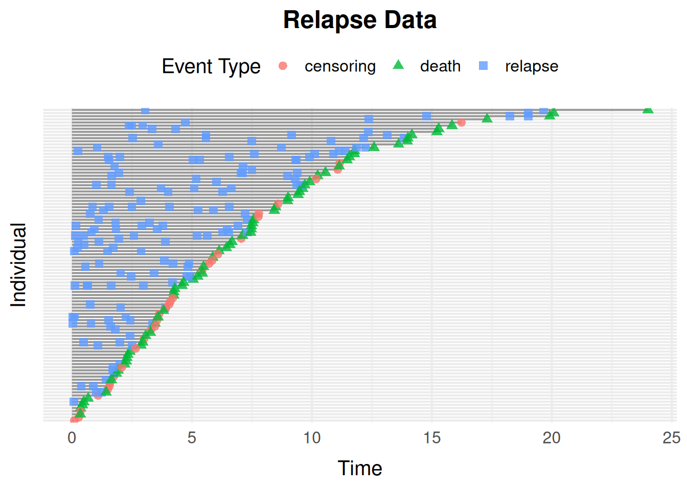
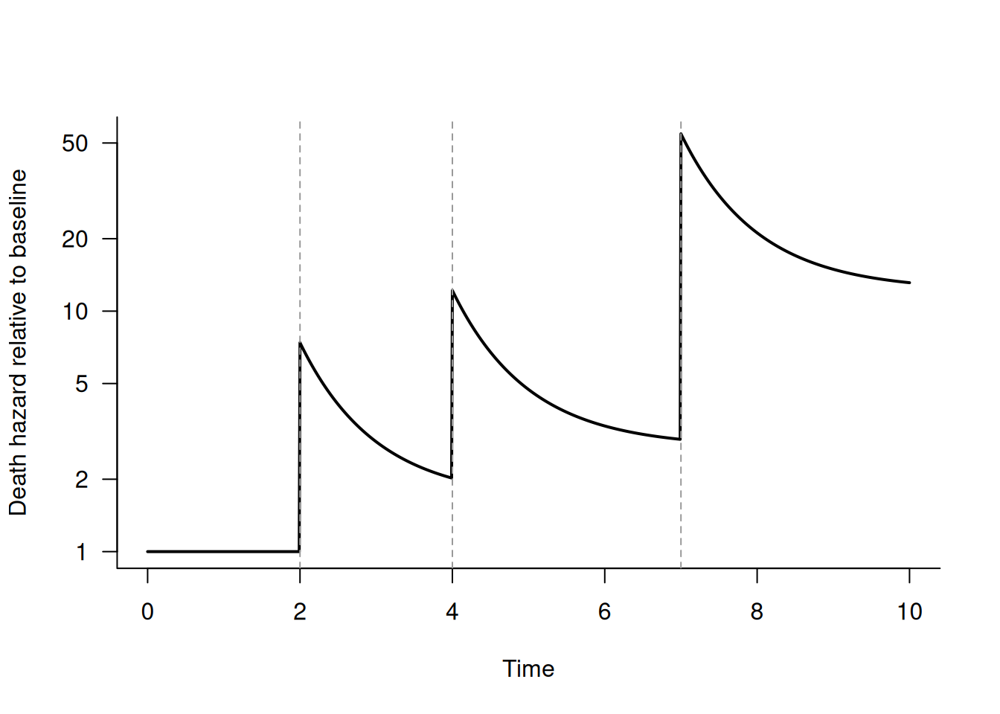

simevent simulates event histories from a model of covariates, event processes and the effects between them. As a running example, we simulate patients who may relapse and die, and then use the model to evaluate a new drug.
Starting Simple: Survival
Suppose we want to simulate how long patients survive, and that older patients die sooner. sim_model() describes this with an age covariate, two processes, and an effect of age on the death hazard. The left side of a sim_effect() formula names the process whose hazard is affected, and coef is a log hazard ratio. simulate_events() then simulates patients from the model:
survival_model <- sim_model(
age = sim_covariate(function(N) rnorm(N, mean = 60, sd = 10)),
censoring = sim_process("censoring", eta = 0.05, nu = 1),
death = sim_process("terminal", eta = 0.05, nu = 1.2),
effects = list(sim_effect(death ~ age - 60, coef = 0.04))
)
survival_model
#> <sim_model>
#> 1 covariate(s): age
#> 2 process(es): censoring, death
#> 1 effect(s):
#> death ~ 0.04 * (age - 60)
survival_data <- simulate_events(survival_model, n = 2000, seed = 1)
head(survival_data)
#> Key: <id>
#> id time event age
#> <int> <num> <fctr> <num>
#> 1: 1 14.378085 death 53.73546
#> 2: 2 5.446483 death 61.83643
#> 3: 3 29.861030 death 51.64371
#> 4: 4 4.005196 censoring 75.95281
#> 5: 5 0.538666 death 63.29508
#> 6: 6 9.098355 censoring 51.79532Each patient is followed until death or censoring. The death hazard is
\lambda_{\text{death}}(t) = \lambda_0(t) \exp\left( 0.04 (\text{age} - 60) \right),
where \lambda_0(t) is the baseline hazard given by eta and nu, so each year above 60 raises the hazard by about 4%.
eta and nu are the Weibull scale and shape. To use a given curve instead, pass a cumulative baseline hazard as cumhaz.
Adding Treatment
Now suppose older patients are more likely to be treated, and treatment lowers the death hazard. Treatment is another covariate, one that depends on age, and update() adds it to the existing model:
treatment_model <- update(
survival_model,
treatment = sim_covariate(function(N, age) {
rbinom(N, 1, plogis((age - 60) / 10))
}),
effects = list(sim_effect(death ~ treatment, coef = -0.5))
)
treatment_model
#> <sim_model>
#> 2 covariate(s): age, treatment
#> 2 process(es): censoring, death
#> 2 effect(s):
#> death ~ 0.04 * (age - 60)
#> death ~ -0.5 * treatmentA covariate’s function takes N and any covariates defined earlier, matched by argument name. + separates the terms of an effect, each with its own coef, as in sim_effect(death ~ age + treatment, coef = c(0.04, -0.5)). To give a sum one coef, wrap it in parentheses.
Adding Relapse
Patients can also relapse, possibly several times, and each relapse raises the death hazard. Treatment makes relapse less likely. A relapse doesn’t end follow-up, so it’s a "transient" process, and using its name in an effect gives the patient’s number of relapses so far:
relapse_model <- update(
treatment_model,
relapse = sim_process("transient", eta = 0.3, nu = 1),
effects = list(
sim_effect(relapse ~ treatment, coef = -0.7),
sim_effect(death ~ relapse, coef = 0.5)
)
)
relapse_data <- simulate_events(relapse_model, n = 2000, seed = 1)
head(relapse_data)
#> Key: <id>
#> id time event age treatment relapse
#> <int> <num> <fctr> <num> <int> <num>
#> 1: 1 0.6768458 death 53.73546 0 0
#> 2: 2 1.5791459 censoring 61.83643 1 0
#> 3: 3 1.1124888 relapse 51.64371 0 1
#> 4: 3 7.2958637 relapse 51.64371 0 2
#> 5: 3 7.5696488 death 51.64371 0 2
#> 6: 4 9.0076112 death 75.95281 1 0Each row is now an event, and plot_event_data() shows the histories:
plot_event_data(relapse_data[relapse_data$id <= 100, ], title = "Relapse Data")
The relapse column is the count after each row’s event. For the values during each interval, as needed for a Cox model, use format_interval_data(). To cap the number of relapses, use sim_process()’s limit.
Effects of Event History
So far every relapse adds the same amount to the log-hazard, forever. Suppose instead that a third relapse is especially serious, and that the risk is highest right after a relapse and then fades. Both can be written directly in the formula, using the current time t and event_time():
history_model <- update(
relapse_model,
effects = list(
sim_effect(death ~ relapse >= 3, coef = 1),
sim_effect(
death ~ (relapse > 0) * exp(-(t - event_time(relapse, -1))),
coef = 1.5
)
)
)event_time(proc, k) is the time of proc’s k-th event, or k-th latest if k is negative, and 0 if it hasn’t happened yet. Without (relapse > 0) *, patients who haven’t relapsed would have exp(-t), as if they had relapsed at time 0.
With all effects so far, the death hazard is
\begin{aligned} \lambda_{\text{death}}(t) = \lambda_0(t) \exp\Big( & 0.04 (\text{age} - 60) - 0.5 \, \text{treatment} + 0.5 R(t) \\ & + \mathbf{1}\{R(t) \ge 3\} + 1.5 \cdot \mathbf{1}\{R(t) > 0\} \cdot e^{-(t-T_{\text{last}}(t))} \Big), \end{aligned}
where R(t) is the number of relapses so far and T_{\text{last}}(t) the time of the latest one, event_time(relapse, -1). For an untreated 60-year-old who relapses at times 2, 4 and 7, this gives:
relapse_times <- c(2, 4, 7)
time <- seq(0, 10, by = 0.01)
relapses_so_far <- findInterval(time, relapse_times)
latest_relapse <- c(0, relapse_times)[relapses_so_far + 1]
relative_hazard <- exp(
0.5 *
relapses_so_far +
(relapses_so_far >= 3) +
1.5 * (relapses_so_far > 0) * exp(-(time - latest_relapse))
)
plot(
time,
relative_hazard,
type = "l",
log = "y",
lwd = 2,
las = 1,
bty = "l",
xlab = "Time",
ylab = "Death hazard relative to baseline"
)
abline(v = relapse_times, lty = 2, col = "grey60")
Each relapse (dashed lines) raises the hazard sharply, and it then fades towards a level higher than before.
See vignette("event-times-and-markers") for more effect shapes, and for covariates that are re-measured over time.
Estimating Intervention Effects
Suppose a new drug halves the relapse hazard. What would that do to mortality? simulate_events()’s intervene argument multiplies a process’s hazard, so simulate with and without the drug, with censoring off (cens = 0), and compare the runs with event_risk():
natural <- simulate_events(history_model, n = 2000, cens = 0, seed = 1)
drug <- simulate_events(
history_model,
n = 2000,
cens = 0,
intervene = list(relapse = 0.5),
seed = 1
)
outcomes <- c("relapse", "death")
data.frame(
process = outcomes,
natural = event_risk(natural, history_model, outcomes, tau = 5)$risk,
drug = event_risk(drug, history_model, outcomes, tau = 5)$risk
)
#> process natural drug
#> 1 relapse 0.5825 0.3755
#> 2 death 0.4535 0.3525The drug lowers the 5-year risk of a first relapse and, since relapses raise the death hazard, the risk of death too. type = "time_lost" gives the expected years lost before tau instead:
event_risk(drug, history_model, "death", tau = 5, type = "time_lost")
#> process time_lost
#> <char> <num>
#> 1: death 0.8376284intervene can also fix covariates. Suppose we want the effect of treatment on death. Comparing treated and untreated patients is confounded by age, because older patients are more often treated. Instead, we can simulate the same population with no one treated, and with everyone treated:
treat_none <- simulate_events(
history_model,
n = 2000,
cens = 0,
intervene = list(treatment = 0),
seed = 1
)
treat_all <- simulate_events(
history_model,
n = 2000,
cens = 0,
intervene = list(treatment = 1),
seed = 1
)
by_group <- event_risk(
natural,
history_model,
"death",
tau = 5,
by = "treatment"
)
data.frame(
treatment = by_group$treatment,
compared = by_group$risk,
intervened = c(
event_risk(treat_none, history_model, "death", tau = 5)$risk,
event_risk(treat_all, history_model, "death", tau = 5)$risk
)
)
#> treatment compared intervened
#> 1 0 0.5578635 0.604
#> 2 1 0.3468150 0.334The direct comparison (compared) understates the benefit of treatment, because the treated patients are older and so at higher risk to begin with.
by only takes baseline columns. For a sim_mark(), group by its baseline value <mark>_0.
Calibrating a Coefficient
So far we’ve chosen the effect of relapse on death ourselves. Suppose instead that we want the effect needed for the drug to prevent 5 percentage points of deaths within 5 years. To find it, we write the drug’s effect as a function of the coefficient, using update() to replace the death ~ relapse effect in relapse_model:
drug_effect <- function(coef, n = 3000, tau = 5, seed = 1) {
model <- update(
relapse_model,
effects = list(sim_effect(death ~ relapse, coef = coef))
)
natural <- simulate_events(model, n = n, cens = 0, seed = seed)
drug <- simulate_events(
model,
n = n,
cens = 0,
intervene = list(relapse = 0.5),
seed = seed
)
event_risk(natural, model, "death", tau = tau)$risk -
event_risk(drug, model, "death", tau = tau)$risk
}Any (black-box) optimization method can then be used, below we use uniroot():
So the drug prevents 5 percentage points of deaths if each relapse multiplies the death hazard by about 1.7.
Building a sim_model() from Fitted Cox Models
So far we’ve chosen every effect ourselves. If you have observed data, you can instead fit a coxph() model for each process, and sim_model_from_fits() then builds a sim_model() from the fits. Here we use relapse_data as the observed data:
observed <- format_interval_data(relapse_data, proc_cols = "relapse")
fits <- list(
censoring = coxph(
Surv(tstart, tstop, event == "censoring") ~ age,
data = observed
),
relapse = coxph(
Surv(tstart, tstop, event == "relapse") ~ treatment,
data = observed
),
death = coxph(
Surv(tstart, tstop, event == "death") ~ age + treatment + relapse,
data = observed
)
)
types <- c(censoring = "censoring", relapse = "transient", death = "terminal")
fitted_model <- sim_model_from_fits(fits, observed, types)
fitted_model
#> <sim_model>
#> 2 covariate(s): age, treatment
#> 3 process(es): censoring, relapse, death
#> 5 effect(s):
#> censoring ~ -0.0007659466 * age
#> relapse ~ -0.6990518 * treatment
#> death ~ 0.04236082 * age
#> death ~ -0.4698075 * treatment
#> death ~ 0.514531 * relapseThe coefficients are close to those of relapse_model. Simulating from the fitted model gives a similar mix of events:
new_data <- simulate_events(fitted_model, n = 2000, seed = 2)
event_levels <- levels(new_data$event)
rbind(
observed = prop.table(table(factor(relapse_data$event, event_levels))),
simulated = prop.table(table(new_data$event))
)
#> censoring relapse death max_cens
#> observed 0.1391155 0.5706312 0.2902533 0
#> simulated 0.1420068 0.5748299 0.2831633 0The fitted model can then be used for everything above, such as evaluating the drug.
- Baseline covariates are resampled as whole rows of
data, which keeps the relationships between them. - Each process uses its fit’s cumulative baseline hazard. It’s unknown after the last observed time, so follow-up ends there, with
event = "max_cens". - A variable named after a process, like
relapsehere, is that process’s event count. - A categorical covariate must be a factor column in
data, used directly in the formula, not wrapped infactor().